콘크리트산업기사 (2020-08-22 기출문제)
1과목: 콘크리트재료 및 배합
1. 굵은 골재 체가름 시험을 실시한 결과 다음과 같은 성과표를 얻었다. 굵은 골재의 최대 치수는?
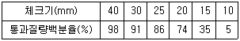
- 15mm
- 20mm
- 25mm
- 30mm
(정답률: 74%)

2. 시멘트 종류별 특성에 대한 설명으로 틀린 것은?
- 고로 슬래그 시멘트 중의 고로 슬래그는 잠재수경성을 갖는다.
- 백색 포틀랜드 시멘트에서는 Fe2O3양이 보통 포틀랜드 시멘트보다 적다.
- 조강 포틀랜드 시멘트는 조강성을 얻기 위하여 보통 포틀랜드 시멘트보다 분말도를 작게 한다.
- 중용열 포틀랜드 시멘트는 일반적으로 조성광물 중 C2S양이 보통 폴틀랜드 시멘트 보다 많다.
(정답률: 63%)
3. 상수돗물 이외의 물을 혼합수로 사용할 경우에 대한 물의 품질 기준을 나타낸 것으로 틀린 것은?
- 현탁 물질의 양 : 2g/L 이하
- 염소 이온(CI-)량 : 250mg/L 이하
- 용해성 증발 잔류물의 양 : 5g/L 이하
- 모르티르의 압축 강도비 : 재령 7일 및 재령 28일에서 90% 이상
(정답률: 59%)
4. 질량이 580g인 표면 건조 포화 상태의 잔골재를 절대 건조시킨 결과 555g이 되었다면, 흡수율은?
- 3.5%
- 4.2%
- 4.5%
- 5.1%
(정답률: 71%)
5. 콘크리트의 배합설계에서 물 결합재비의 결정을 위하여 고려하는 사항으로 거리가 먼 것은?
- 강도
- 내구성
- 수밀성
- 시공성
(정답률: 65%)
6. 시멘트 비중시험의 목적이 아닌 것은?
- 시멘트의 종류를 알 수 있다.
- 시멘트의 응결시간을 예측한다.
- 콘크리트 배합설계 시 필요하다.
- 시멘트의 풍화 정도를 알 수 있다.
(정답률: 52%)
7. 시멘트의 응결시간 시험 방법으로 옳은 것은?
- 비비시험
- 블레인시험
- 오토클레이브 시험
- 길모어 침에 의한 시험
(정답률: 72%)
8. 콘크리트 1m3을 제조하는데 물-시멘트비가 48.5%이고 단위수량이 178kg, 공기량이 4.5%일 때 이 콘크리트의 배합에서 골재 절대용적은? (단, 시멘트 밀도는 3.15g/cm3이다.)
- 0.66m3
- 0.68m3
- 0.70m3
- 0.72m3
(정답률: 39%)
9. 실제 사용한 콘크리트의 40회 압축강도 시험으로부터 압축강도(MPa) 잔차의 제곱을 구하여 합한 값이 624이었다. 콘크리트의 배합강도를 결정하기 위한 압축강도의 표준편차는?
- 3.0MPa
- 3.5MPa
- 4.0MPa
- 4.5MPa
(정답률: 65%)
10. 콘크리트용 잔골재의 물리적 특성을 평가하기 위한 시험으로 거리가 먼 것은?
- 마모율
- 흡수율
- 안정성
- 절대건조밀도
(정답률: 59%)
11. 철근의 인장시험에 의하여 구할 수 있는 기계적 특성 값이 아닌 것은?
- 내력
- 연신율
- 단면수축률
- 취성파면율
(정답률: 57%)
12. 압축강도의 시험기록이 없는 현장에서 설계기준압축강도가 20MPa인 경우 배합 강도는?
- 25MPa
- 27MPa
- 28.5MPa
- 30MPa
(정답률: 72%)
13. 플라이 애시(KS L 54⑤)의 품질시험항목 중 아래에서 설명하는 것은?
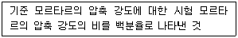
- 안정도
- 팽창도
- 플로값 비
- 활성도 지수
(정답률: 62%)
14. 굵은 골재의 최대 치수가 20mm인 시료로 밀도 및 흡수율 시험(KS F 2503)을 실시하고자 한다. 1회 시험에 사용하는 시료의 최소 질량으로 옳은 것은? (단, 보통 골재를 사용한다.)
- 1kg
- 2kg
- 4kg
- 8kg
(정답률: 54%)
15. 공기연행제의 사용 목적과 효과에 대한 설명으로 틀린 것은?
- 굳은 콘크리트의 동결 융해 저항성을 증대시키기 위해 사용한다.
- 유효공기량의 6% 이상이 되면 강도발현이 현저히 증가한다.
- 유효공기량은 2% 이하에서 동결 융해의 저항성이 개선되지 않는다.
- 굳지 않은 콘크리트의 작업성을 개량하여 콘크리트의 시공성을 좋게 한다.
(정답률: 64%)
16. 콘크리트 배합에 사용되는 물-결합재비에 관한 설명으로 틀린 것은?
- 제빙화학제가 사용되는 콘크리트의 물-결합재비는 45% 이하로 한다.
- 콘크리트의 수밀성을 기준으로 물-결합재비를 정할 경우 그 값은 50% 이하로 한다.
- 콘크리트의 탄산화 저항성을 고려하여 물-결합재비를 정할 경우 45% 이하로 한다.
- 일반적인 콘크리트의 물-결합재비는 60%이하를 원칙으로 한다.
(정답률: 55%)
17. 콘크리트의 혼합에 사용되는 물 중 시험을 실시하지 않아도 사용할 수 있는 것은?
- 지하수
- 호숫물
- 상수돗물
- 슬러지수
(정답률: 79%)
18. 콘크리트용 잔골재의 특징에 관한 설명으로 옳지 않은 것은?
- 잔골재에 함유될 수 있는 점토덩어리의 최댓값은 1.5%이다.
- 잔골재의 잔성성은 황산나트륨을 사용한 시험으로 평가한다.
- 부순 골재의 씻기 시험에서 0.08mm체통과량은 7% 이하이어야 한다.
- 유기불순물 시험결과 잔골재 위에 있는 용액의 색깔은 표준색보다 엷어야 한다.
(정답률: 53%)
19. 콘크리트 배합설계의 기본원칙에 대한 설명으로 틀린 것은?
- 경제성 있는 배합일 것
- 충분한 내구성을 확보할 것
- 가능한 한 단위수량을 적게 할 것
- 최대 치수가 작은 굵은 골재를 사용할 것
(정답률: 66%)
20. 시멘트의 수화에 영향을 주는 인자들에 관한 설명으로 옳은 것은?
- 온도가 높을수록 응결이 지연된다.
- 단위수량이 클수록 응결이 빠르게 진행된다.
- 시멘트의 분말도가 높을수록 수화반응속도가 빨라져서 응결이 빨리 진행된다.
- 포졸란계 혼화재료가 사용된 경우 CaO성분이 줄어들므로 수화반응이 촉진된다.
(정답률: 69%)
2과목: 콘크리트제조, 시험 및 품질관리
21. 믹서의 효율을 시험하기 위하여 믹서로 비빈 굳지 않은 콘크리트 중의 모르타르와 굵은 골재량의 변화율 시험을 수행하고자 한다. 굵은 골재의 최대 치수가 25mm인 경우 시료의 양으로서 가장 적합한 것은?
- 10L
- 20L
- 25L
- 50L
(정답률: 61%)
22. 강제식 믹서로 콘크리트의 비비기를 할 경우 최소 비비기 시간은 얼마를 표준으로 하는가? (단, 비비기 시간에 대한 시험을 실시하지 않을 경우)
- 30초
- 1분
- 1분 30초
- 2분
(정답률: 62%)
23. 지름 150mm, 높이 300mm인 공시체의 쪼갬 인장 강도 시험을 실시한 결과 공시체가 100kN의 하중에 파괴되었다면 콘크리트의 쪼갬 인장 강도는?
- 1.0MPa
- 1.2MPa
- 1.4MPa
- 1.6MPa
(정답률: 61%)
24. 굵은 골재의 최대 치수, 잔골재율, 잔골재의 입도, 반죽질기 등에 따르는 마무리 하기 쉬운정도를 나타내는 굳지 않은 콘크리트의 성질을 나타내는 용어는?
- 성형성(plasticity)
- 마감성(finishability)
- 시공연도(workability)
- 반죽질기(consistency)
(정답률: 48%)
25. 굳지 않은 콘크리트의 단위용적 질량 및 공기량 시험(질량방법, KS F 2409)에 대한 설명으로 틀린 것은?
- 시료를 용기의 약 1/5까지 넣고 다짐봉으로 균등하게 다진다.
- 다짐봉의 다짐 깊이는 거의 그 앞 층에 이르는 정도로 한다.
- 용기 중 시료의 질량은 시험 전 미리 측정한 용기의 질량을 이용한다.
- 다짐 구멍이 없어지고 콘크리트 표면에 큰 기포가 보이지 않을 때까지 용기의 바깥쪽을 10~15회 고무망치로 두들긴다.
(정답률: 59%)
26. 콘크리트 재료 중 혼화제의 계량에 대한 허용오차로 옳은 것은?
- ±1%
- ±2%
- ±3%
- ±4%
(정답률: 58%)
27. 레디믹스트 콘크리트 공장의 회수수를 혼합수로서 사용하는 경우의 주의사항에 관한 설명으로 틀린 것은?
- 슬러지 고형분은 단위수량의 3% 이하로 한다.
- 슬러지 고형분이 많은 경우에는 AE제의 사용량을 증가시킨다.
- 슬러지 고형분이 많은 경우에는 잔골재율을 감소시킨다.
- 슬러지 고형분이 많은 경우에는 단위수량과 단위 시멘트량을 증가시킨다.
(정답률: 31%)
28. 동결융해 작용에 대한 내구성에 관한 내용을 틀린 것은?
- 동결되지 않은 물의 압력이 높아져서 콘크리트 속에 미세균열이 발생한다.
- 물-결합재비가 큰 콘크리트는 동결융해에 대한 저항성이 증가한다.
- AE 콘크리트는 수압이 공기포로 완화되기 때문에 동결융해 작용에 대한 저항성이 증가한다.
- 인공경량골재를 사용한 콘크리트의 동결융해 작용에 대한 내구성은 보통콘크리트보다 좋지 않다.
(정답률: 55%)
29. 굳은 콘크리트의 역학적 성질에 관한 설명으로 가장 거리가 먼 것은?
- 압축강도와 인장강도는 어느 정도 비례한다.
- 탄성계수는 일반적으로 압축강도가 클수록 크게 된다.
- 압축강도용 공시체 표면에 요철이 있는 경우 실제 강도보다 강도가 저하한다.
- 굳은 콘크리트에 재하하면서 응력 변형률 곡선을 그리면 선형으로 나타난다.
(정답률: 53%)
30. 압력법에 의한 굳지 않은 콘크리트의 공기량 시험(KS F 2421)에 대한 설명으로 틀린 것은?
- 물을 붓고 시험하는 경우(주수법) 공기량 측정기의 용적은 적어도 7L 이상으로 한다.
- 공기량 측정 종료 후에는 덮개를 떼기 전에 주수구와 배수구를 양쪽으로 열고 압력을 푼다.
- 콘크리트의 공기량은 측정한 콘크리트의 겉보기 공기량에서 골재 수정 계수를 뺀값으로 구한다.
- 시료를 용기에 채울 때 거의 같은 양으로 3층으로 채우고, 각 층은 다짐봉으로 25회씩 균등하게 다져야 한다.
(정답률: 55%)
31. 통계적 품질관리 방법이 아닌 것은?
- 관리도법
- 표본조사
- 현장검사
- 발취검사법
(정답률: 60%)
32. 비파괴시험을 이용하여 측정하거나 추정하지 않는 재료 성질은?
- 압축 강도
- 동탄성계수
- 크리프 변형률
- 동결 융해 저항성
(정답률: 41%)
33. 압축강도에 의한 일반 콘크리트의 품질검사에 관한 설명으로옳지 않은 것은?
- 품질 검사는 설계기준압축강도로부터 배합을 정한 경우와 그 밖의 경우로 구분하여 시행한다.
- 압축강도에 의한 콘크리트 품질관리는 일반적인 경우 조기 재령에 있어서의 압축강도에 의해 실시한다.
- 설계기준압축강도로부터 배합을 정한 경우 연속 3회 시험값의 평균이 설계기준압축강도 이상이어야 한다.
- 설계기준압축강도로부터 배합을 정한 경우 각각의 압축강도 시험값이 설계기준압 축강도보다 5.0MPa 미달하는 확률이 1%이하이어야 한다.
(정답률: 50%)
34. 단면적이 10000mm2인 콘크리트 공시체가 압축 강도 시험에 의해서 270kN에서 파괴되었다면, 이 콘크리트의 압축 강도는?
- 21.0MPa
- 24.0MPa
- 27.0MPa
- 30.0MPa
(정답률: 64%)
35. 외기기온이 25℃ 미만의 경우 레디믹스트 콘크리트의 비빔 시작부터 타설 종료 까지의 시간한도는?
- 60분
- 90분
- 120분
- 150분
(정답률: 55%)
36. 콘크리트 타설 후 응결 및 경화과정에서 나타나는 초기 소성수축 균열에 대한 설명으로 옳은 것은?
- 균열이 발생하여 커지는 정도는 블리딩이 큰 콘크리트 일수록 높아진다.
- 콘크리트 작업 시 시공이음부의 레이턴스를 제거하지 않았을 때 나타난다.
- 콘크리트 표면의 물의 증발속도가 블리딩 속도보다 빠른 경우 발생되는 균열이다.
- 콘크리트 표면 가까이에 있는 철근, 매설 물 또는 입자가 큰 골재 등이 침하를 방해하기 때문에 나타난다.
(정답률: 58%)
37. 동결 융해 150사이클에서 상대 동 탄성계수가 60%일 때 동결 융해에 대한 내구성 지수는? (단, 시험의 종료는 300사이클로 한다.)
- 15
- 30
- 60
- 100
(정답률: 52%)
38. 콘크리트의 골재에 관한 설명으로 틀린 것은? (문제 오류로 실제 시험에서는 모두 정답처리 되었스빈다. 여기서는 1번을 누르면 정답처리 됩니다.)
- 모래 및 자갈의 비중은 2.65~2.70 정도이다.
- 골재의 형태는 구형이면서 표면이 매끈한 것이 좋다.
- 바다모래를 씻어서 사용하면 콘크리트의 강도에는 큰 영향이 없다.
- 골재의 표면수의 영향은 굵은 골재에 의한 것보다 잔골재에 의한 것이 크다.
(정답률: 52%)
39. 4점 재하법에 의한 콘크리트의 휨 강도 시험방법에 관한 사항 중 틀린 것은?
- 지간은 공시체 높이(공칭값)의 3배로 한다.
- 시험기는 시험 시 최대 하중이 용량의 1/3에서 최대 용량까지의 범위에서 사용한다.
- 파괴 단면의 너비는 3곳에서 0.1mm까지 측정하며, 그 평균값을 소수점 이하 첫째 자리에서 끝맺음한다.
- 공시체가 인장쪽 표면의 지간 방향 중심선의 4점의 바깥쪽에서 파괴된 경우는 그 시험 결과를 무효로 한다.
(정답률: 35%)
40. 레디믹스트 콘크리트의 발주에 있어 구입자가 생산자와 협의하여 지정할 수 있는 사항이 아닌 것은?
- 골재의 종류
- 시멘트의 종류
- 단위 수량의 하한치
- 굵은 골재의 최대 치수
(정답률: 56%)
3과목: 콘크리트의 시공
41. 수밀 콘크리트의 배합 및 시공에 관한 일반적인 설명으로 틀린 것은?
- 팽창재를 사용하여 수축균열을 방지한다.
- 일반 콘크리트보다 잔골재율 및 단위 굵은 골재량을 되도록 작게 한다.
- 콘크리트의 워커빌리티를 개선시키기 위해 공기연행제를 사용하는 경우라도 공기량은 4% 이하가 되도록 한다.
- 누수 원인이 되는 건조수축 균열의 발생이 없도록 시공하여야 하며, 0.1mm 이상의 균열 발생이 예상되는 경우 누수를 방지하기 위한 방수를 검토하여야 한다.
(정답률: 54%)
42. 서중 콘크리트에 대한 설명으로 틀린 것은?
- 콘크리트는 비빈 후 1.5시간 이내에 타설하여야 한다.
- 콘크리트 타설할 때의 콘크리트 온도는 40℃이하이어야 한다.
- 콘크리트 타설 전에는 지반, 거푸집 등을 습윤상태로 유지하여야 한다.
- 콘크리트 타설은 콜드 조인트가 생기기 않도록 적절한 계획에 따라 실시하여야 한다.
(정답률: 58%)
43. 일반적인 매스 콘크리트 시공에 바람직한 시멘트가 아닌 것은?
- 중용열 시멘트
- 알루미나 시멘트
- 고로 슬래그 시멘트
- 플라이 애시 시멘트
(정답률: 60%)
44. 일반 콘크리트의 경우, 대기 중 온도가 25℃미만일 때 비비기로부터 타설이 끝날 때까지의 최대 소요시간은?
- 30분 이내
- 60분 이내
- 90분 이내
- 120분 이내
(정답률: 55%)
45. 한중 콘크리트의 초기양생에 관한 내용 중 ㉠, ㉡에 적정한 숫자는?
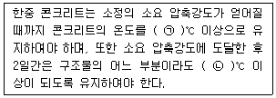
- ㉠ : 4, ㉡ : 1
- ㉠ : 4, ㉡ : 0
- ㉠ : 5, ㉡ : 1
- ㉠ : 5, ㉡ : 0
(정답률: 38%)
46. 다음의 시방배합을 현장배합으로 환산할 때 잔골재량은?
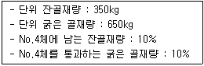
- 312.5kg
- 387.5kg
- 612.5kg
- 687.5kg
(정답률: 42%)
47. 콘크리트 다지기에 대한 설명으로 틀린 것은?
- 콘크리트 다지기에는 내부진동기의 사용을 원칙으로 한다.
- 재진동을 실시할 경우에는 초결이 일어난 후에 하여야 한다.
- 내부진동기는 천천히 빼내어 구멍이 남지 않도록 사용해야 한다.
- 내부진동기는 연직으로 찔러 넣으며, 삽입간격은 일반적으로 0.5m 이하로 하는 것이 좋다.
(정답률: 52%)
48. 도로포장 콘크리트용 굵은 골재의 마모시험을 수행한 결과, 시험 전 시료의 질량은 1300g, 시험 후 1.7mm 망체에 남은 질량은 800g이었다. 이때 골재의 마모율은?
- 31%
- 38%
- 44%
- 50%
(정답률: 49%)
49. 고강도 콘크리트의 일반사항에 대한 아래의 설명에서 ( )안에 알맞은 수치는?
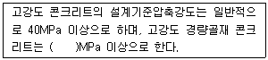
- 27
- 30
- 33
- 35
(정답률: 57%)
50. 콘크리트의 탄산화 대책으로 적절하지 않은 것은?
- 양질의 골재를 사용한다.
- 철근피복두께를 확보한다.
- 물-결합재비를 작게 한다.
- 투기성이 큰 마감재를 사용한다.
(정답률: 54%)
51. 일반적으로 수중 콘크리트를 시공할 때 시멘트가 물에 씻겨서 흘러나오지 않도록 사용하는 기계·기구는?
- 트레미
- 밑열림 상자
- 밑열림 포대
- 벨트컨베이어
(정답률: 68%)
52. 팽창 콘크리트에서 팽창재의 1회계량오차는?
- 1% 이내
- 2% 이내
- 3% 이내
- 4% 이내
(정답률: 42%)
53. 거푸집 설계 시 고려사항으로 틀린 것은?
- 콘크리트의 모서리는 미관을 고려하여 가급적 직각을 유지해야 한다.
- 거푸집은 조립 및 해체가 용이해야하며 모트라트가 새어나오지 않는 구조이어야 한다.
- 구조물의 거푸집에 대해서는 책임기술자가 요구하는 경우 구조설계도서를 제출하여 승인받아야 한다.
- 필요한 경우에는 거푸집의 청소, 검사 및 콘크리트 타설에 편리하도록 적당한 위치에 일시적인 개구부를 만들어야 한다.
(정답률: 55%)
54. 콘크리트 시공이음에 대한 설명으로 틀린 것은?
- 전단력이 작은 위치에 설치한다.
- 부재의 압축력이 작용하는 방향과 같은 방향으로 설치한다.
- 설계에 정해져 있는 이음의 위치와 구조를 지켜 설치한다.
- 해양 콘크리트 구조물에 부득이하게 시공 이음을 설치할 경우 만조위로부터 위로 0.6m와 간조위로부터 아래로 0.6m 사이인 감조부는 피하여 설치한다.
(정답률: 48%)
55. 방사선 차폐용 콘크리트에 관한 설명으로 틀린 것은?
- 방사선 유출검사는 공사시방서에 따른다.
- 설계에 정해져 있지 않은 이음은 설치할 수 없다.
- 현장 품질관리는 일반 콘크리트에서 정한 기준을 표준으로 한다.
- 이어치기 부분에 대하여 기밀이 최대한 유지될 수 있는 방안을 강구하여야 한다.
(정답률: 60%)
56. 유동화 콘크리트에 대한 내용으로 틀린 것은?
- 배합 시 슬럼프 및 공기량은 유동화 전후의 것으로 한다.
- 슬럼프 증가량은 100mm이하를 원칙으로 하며, 50~80mm를 표준으로 한다.
- 유동화제 등을 이용하여 유동화 콘크리트를 재유동화 시키는 것은 매우 효율적이다.
- 배치플랜트에서 트럭 교반기 내의 콘크리트에 유동화제를 첨가하여 즉시 고속으로 교반하여 유동화시는 방법도 있다.
(정답률: 50%)
57. 일반 콘크리트의 표면 마무리에 대한 설명으로 틀린 것은?
- 미리 정해진 구획의 콘크리트 타설은 연속해서 일괄작업으로 끝마쳐야 한다.
- 시공이음이 미리 정해져 있지 않을 경우에는 직선상의 이음이 얻어지도록 시공하여야 한다.
- 제물치장 마무리 또는 마무리 두께가 얇은 경우에는 1m 당 7mm 이하의 평탄성을 유지하여야 한다.
- 콘크리트 면의 마무리 두께가 7mm이상 또는 바탕의 영향을 많이 받지 않은 마무리의 경우 평탄성은 1m 당 10mm 이하를 유지하여야 한다.
(정답률: 39%)
58. 숏크리트 코어 공시체(ø10cm×10cm)로 부터 채취한 강섬유의 질량이 30.8g이었다. 강섬유 혼입률(부피기준)은? (단, 강섬유의 단위질량은 7.85g/cm3이다.)
- 0.5%
- 1%
- 3%
- 5%
(정답률: 24%)
59. 수밀 콘크리트의 연속타설 시간 간격은 외기온도가 25℃ 이하일 때 몇 시간 이내로 하여야 하는가?
- 1시간
- 1시간 30분
- 2시간
- 2시간 30분
(정답률: 59%)
60. 숏크리트의 시공에서 건식 숏크리트는 배치 후 몇 분 이내에 뿜어붙이기를 실시하여야 하는가?
- 15분
- 30분
- 45분
- 60분
(정답률: 45%)
4과목: 콘크리트 구조 및 유지관리
61. b=300mm, d=500mm인 복철근 직사각형 보 단면의 압축부에 3-D22(As’=1161mm2)의 철근과 인장부에 6-D32(As=4765mm2)의 철근을 갖고 있을 때, 등가응력의 깊이(a)는? (단, fck=28MPa, fy=300MPa이다.)
- 151.4mm
- 168.6mm
- 175.9mm
- 184.7mm
(정답률: 33%)
62. 그림과 같은 보에 최소 전달철근을 배근하려고 할 때 최소 전단철근량은? (단, fck=24MPa, fy=350MPa이며, 전단철근의 간격은 200mm이다.)
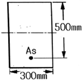
- 52.5mm2
- 56.8mm2
- 60.0mm2
- 64.7mm2
(정답률: 26%)
63. 그림과 같은 단면의 보에서 fck=28MPa일 때, 보통 중량 콘크리트가 분담하는 설계전단강도(øVc)는? (단, 경량콘크리트 계수 λ=1)
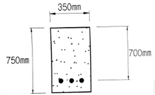
- 약 151kN
- 약 162kN
- 약 173kN
- 약 185kN
(정답률: 37%)
64. 일반적으로 정사각형 확대 기초에서 전단에 대한 위험단면은? (단, d는 확대기초의 유효깊이이고, 1방향 전단이 발생하는 경우)
- 기둥의 전면
- 기둥의 전면에서 d/2만큼 떨어진 면
- 기둥의 전면에서 d만큼 떨어진 면
- 기둥의 전면에서 기둥 두께만큼 안쪽으로 떨어진 면
(정답률: 42%)
65. 기존 콘크리트의 압축강도 평가방법 중 가장 신뢰성이 높은 것은?
- 인발시험
- 반발경도방법
- 초음파속도법
- 코어 압축강도시험
(정답률: 56%)
66. 압축이형 철근의 이음에 관한 규정으로 틀린 것은?
- fck가 21MPa 미만인 경우 겹침이음길이를 1/3 증가시켜야 한다.
- 겹침이음길이는 fy가 400MPa이하인 경우 0.072fydb보다 길 필요가 없다.
- 서로 다른 크기의 철근을 압축부에서 겹침이음하는 경우, 이음길이는 굵은 철근의 겹침이음길이를 적용한다.
- 단부 지압이음은 폐쇄띠철근, 폐쇄스터럽 또는 나선철근을 배치한 압축부재에서만 사용하여야 한다.
(정답률: 34%)
67. 강도설계법의 기본가정으로 틀린 것은?
- 철근 및 콘크리트의 변형률은 중립축으로 부터의 거리에 비례한다.
- 압축측 연단에서 콘크리트의 최대 변형률은 0.003으로 가정한다.
- 항복강도 fy이내에서 철근의 응력은 그 변형률의 Es배로 본다.
- 콘크리트의 인장강도는 휨 계산에서
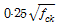
로 계산한다.
(정답률: 49%)
68. 옹벽의 전도에 대한 안정조건으로 옳은 것은?
- 저항휨모멘트는 전도휨모멘트의 2.0배 이상이어야 한다.
- 저항휨모멘트는 전도휨모멘트의 1.5배 이상이어야 한다.
- 전도휨모멘트는 저항휨모멘트의 2.0배 이상이어야 한다.
- 전도휨모멘트는 저항휨모멘트의 1.5배 이상이어야 한다.
(정답률: 45%)
69. 재하시험에 의해 기존 구조물의 안전성 평가를 하고자 할 때 재하 하중에 대한 아래 설명에서 ( )에 적합한 수치는?
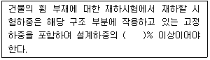
- 65
- 75
- 85
- 95
(정답률: 50%)
70. 콘크리트 균열에 대한 보수재료 또는 보수공법이 아닌 것은?
- 에폭시
- 주입공법
- 증설공법
- 실리카 퓸
(정답률: 48%)
71. 프리스트레스트 콘크리트에 대한 설명으로 틀린 것은?
- 프리텐션 방식은 긴장재를 곡선으로 배치하기가 어려워 대형부재의 제조에는 적합하지 않다.
- 긴장재가 부착되기 전의 단면 특성을 계산할 경우 덕트로 인한 단면적의 손실을 고려하여야 한다.
- 균등질 보의 개념은 프리스트레싱의 작용과 부재에 작용하는 하중을 비기도록 하는데 목적을 둔 개념이다.
- 프리스트레스를 도입하자마자 일어나는 즉시손실의 원인은 정착장치의 활동, PS강재와 쉬스 사이의 마찰, 콘크리트의 탄성변형이 있다.
(정답률: 37%)
72. 콘크리트의 동결융해에 대한 저항성을 설명한 내용으로 틀린 것은?
- 콘크리트 표면으로부터 서서히 열화가 진행된다.
- AE콘크리트에서는 기포의 직경이 클수록 동결융해에 대한 저항성이 크게 된다.
- 다공질 골재를 사용하는 등 골재의 흡수성이 큰 경우에는 동결융해에 대한 저항성이 작게 된다.
- 밀실하고 균질한 콘크리트가 얻어지도록 필요한 워커빌리티를 확보하고 충분히 다짐하면 동결융해에 대한 저항성이 높아진다.
(정답률: 47%)
73. 탄소 섬유 보강공법의 일반적인 시공 순서로 옳은 것은?
- 균열 보수 및 패칭 처리 → 프라이머 및 수지도포 → 보호 코팅 → 섬유시트 부착
- 프라이머 및 수지도포 → 균열 보수 및 패칭 처리 → 섬유시트 부착 → 보호 코팅
- 균열 보수 및 패칭 처리 → 프라이머 및 수지 도포 → 섬유시트 부착 → 보호 코팅
- 섬유시트 부착 → 균열 보수 및 패징 처리 → 프라이머 및 수지 도포 → 보호 코팅
(정답률: 56%)
74. 실제 탄산화 속도계수가 9mm/√년 인 콘크리트 구조물이 16년 경과한 시점의 탄산화 깊이는? (단, 예측식의 변동성을 고려한 안전계수는 1로 가정한다.)
- 12mm
- 36mm
- 48mm
- 144mm
(정답률: 59%)
75. 아래 그림과 같이 PS콘크리트 보에서 하중평형개념을 고려할 때 등분포의 상향력(u)은? (단, P=2000kN, s=0.2m이다.)
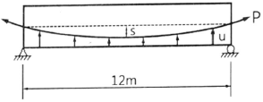
- 22.2kN/m
- 27.2kN/m
- 31.2kN/m
- 35.2kN/m
(정답률: 38%)
76. 콘크리트의 강도를 평가할 수 있는 시험 방법이 아닌 것은?
- 반발경도법
- 투수성시험
- 코어테스트
- 부착강도시험
(정답률: 52%)
77. 콘크리트 염해에 대한 설명으로 틀린 것은?
- 해안에 가까울수록 염해가 발생한 가능성은 커진다.
- 부식반응은 애노드반응과 캐소드반응이 조합된 반응이다.
- 콘크리트 내 함수율이 높을수록 염화물이 온의 확산계수비는 커진다.
- 염화물이온에 의한 철근부식은 산소와 수분, 중성화가 동반되어야만 발생한다.
(정답률: 49%)
78. 프리스트레스트 콘크리트에 사용되는 PS강재가 갖추어야 할 일반적인 성질이 아닌 것은?
- 인장 강도가 높아야 한다.
- 릴랙세이션(relaxation)이 작아야 한다.
- 콘크리트와의 부착 강도가 커야 한다.
- 응력 부식에 대한 저항성이 작아야 한다.
(정답률: 38%)
79. 콘크리트 타설 후 가장 빨리 발생되는 균열의 종류는?
- 온도균열
- 소성수축균열
- 건조수축균열
- 알칼리 골재반응
(정답률: 57%)
80. 아래에서 설명하는 균열의 보수기법은?
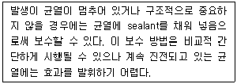
- 봉합법
- 짜깁기법
- 에폭시 주입법
- 보강철근 이용방법
(정답률: 42%)